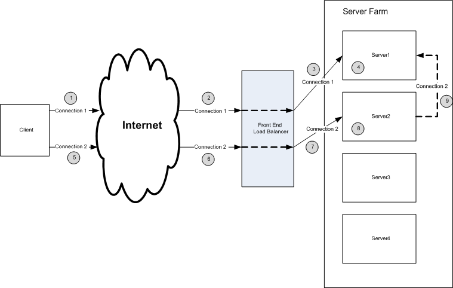

title: Deploying Load Balancing
description: Deploying Load Balancing
ms.assetid: d80b8999-16c9-4fc8-a1cb-35a65f434884
ms.topic: article
ms.date: 05/31/2018
Deploying Load Balancing
The typical deployment environment and use case is which the RPC Load balancer is utilized is shown below:
- The RPC client makes an RPC/HTTP connection to the server farm.
- The connection is forwarded through the network to a front end load balancer
- The front end load balancer chooses a server to service the request. In this example, the front end load balancer forwards the connection to Server 1.
- The RPC Load balancer service arbitrates the connection. It determines that this is the first connection from the client and associates the connection with the local server, Server 1.
- The client makes a second RPC/HTTP request.
- The request is forwarded through the network to the front end load balancer.
- The front end load balancer chooses a server to service the request. In this case, the front end load balancer chooses Server 2 to service the request.
- The RPC Load Balancer service arbitrates the connection. It recognizes that connections from this client is being serviced by Server 1.
- The connection is forwarded to Server 1.
Â
Â